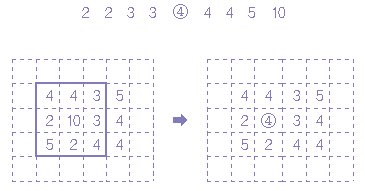
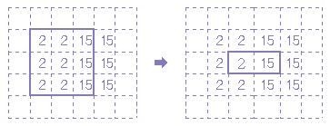

중간값 필터(Median filter)
아래 그림[1]과 같은 농도를 가진 영상이 있다고 가정하자.
그림에서 3x3의 영역내(굵은 선)의 9개의 화소를 오름차순으로 정렬하면 다음과 같다

그림 [1] 일반적인 화소값을 구하는 예
이 때의 중앙 값(이것을 median이라 한다), 이 경우는 전부 9개이기 때문에,
왼쪽에서 5번째의 농도4가 구할 수 있는 화소의 농도가 된다.
위의 예에서 10이라고 하는 원래의 화소는 잡음 성분이 었는데, 확실히 제거 되었다.
이것은 주변과 비교하여 극단적으로 농도의 차이가 있는 것은 크기의 순서로 나열했을 때,
왼쪽이나 오른쪽으로 치우치게 되어 중앙값으로 선택되지 않기 때문이다.
이와 같이 미디언 필터(Median Filter)는 어떤 화소 주변의 영역내의 화소 농도의 중간값을 구하여
원하는 화소의 농도로 처리하는 것이다.
그러면, 다음의 오른쪽 화소(농단값 3)를 계산 해보면 중앙값은 실제로는 3인데 4가 되고 만다.
이 경우에는 Median Filter의 오류에 속하지만 시각적으로 보기에는 잘 구분할 수 없다.
그 보다 중요한 것은 에지(edge)부분을 보존할 수 있느냐 하는 것이다.
다음의 예를 살펴보자.

그림 [2] 에지 부분에서 화소를 구하는 예
위의 그림 [2]에서 왼쪽부분은 에지가 있는 화소지만,
굵은 선으로 표시된 화소들의 순서를 구해보면,
오른쪽과 같이 되어 완전하게 에지가 보존됨을 알 수 있다.
Mean Filter의 경우 잡음 성분도 평균의 계산에 포함되므로
출력이 잡음의 영향을 받지만 Median Filter의 경우는 잡음 성분이 선택되는 경우가
드물므로 출력에 그다지 영향을 주지 않는다.
이 방법의 프로그램을 살펴보면 다음과 같다.
/******/* function for Medain Filter method *******/
int median(unsigned char buf[]){
int i, j, temp;
for(j = 1; j < 8; j++) {
for(i = 1; i < 8; i++) {
if (buf[i+1] < buf[i]) {
temp = buf[i+1];
buf[i+1] = buf[i];
buf[i] = temp;
}
}
}
return (buf[4]);}
이 두가지 기법에 의한 결과를 살펴보면,
미디언 필터를 사용한 경우가 훨씬 선명한 출력 데이터를 가짐을 알 수 있다.
하지만 Median Filter의 경우는 정렬을 하기 때문에
시간상으로 Mean Filter보다 5배정도 걸린다는 단점이 있다.
프로그래을 적용한 영상을 살펴보면 다음과 같다.
 (잡음 영상) (Median filter 결과)
(잡음 영상) (Median filter 결과)